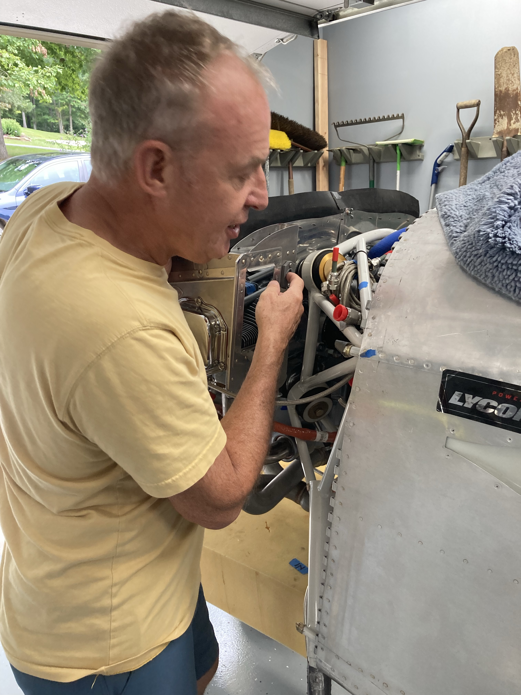
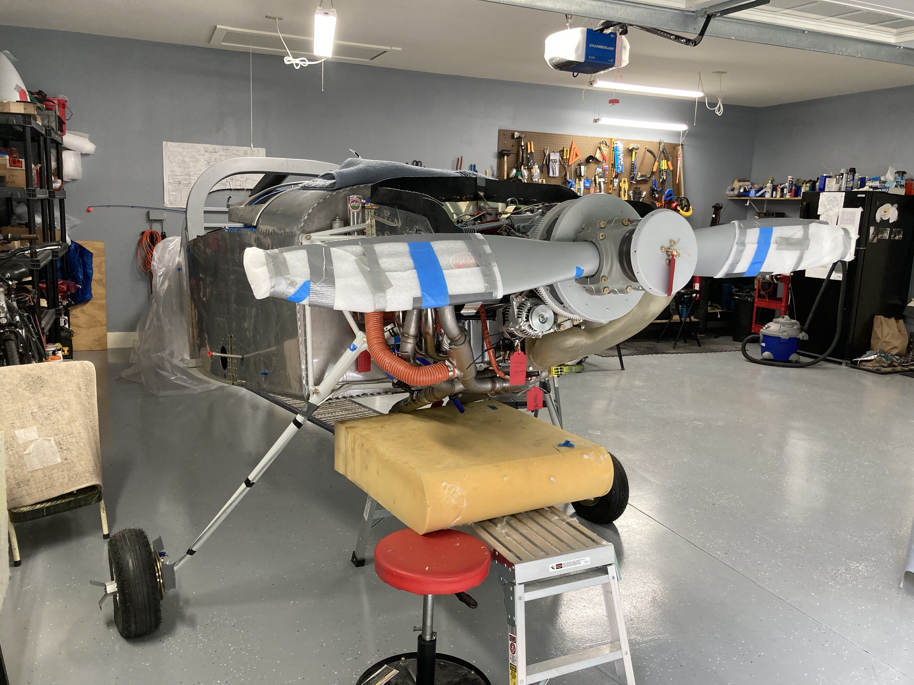
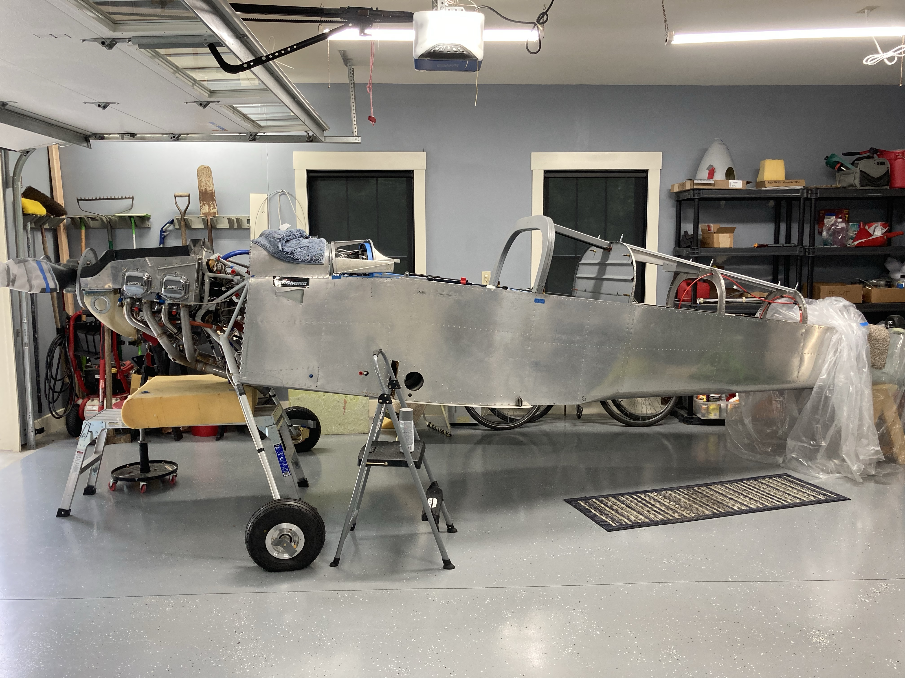
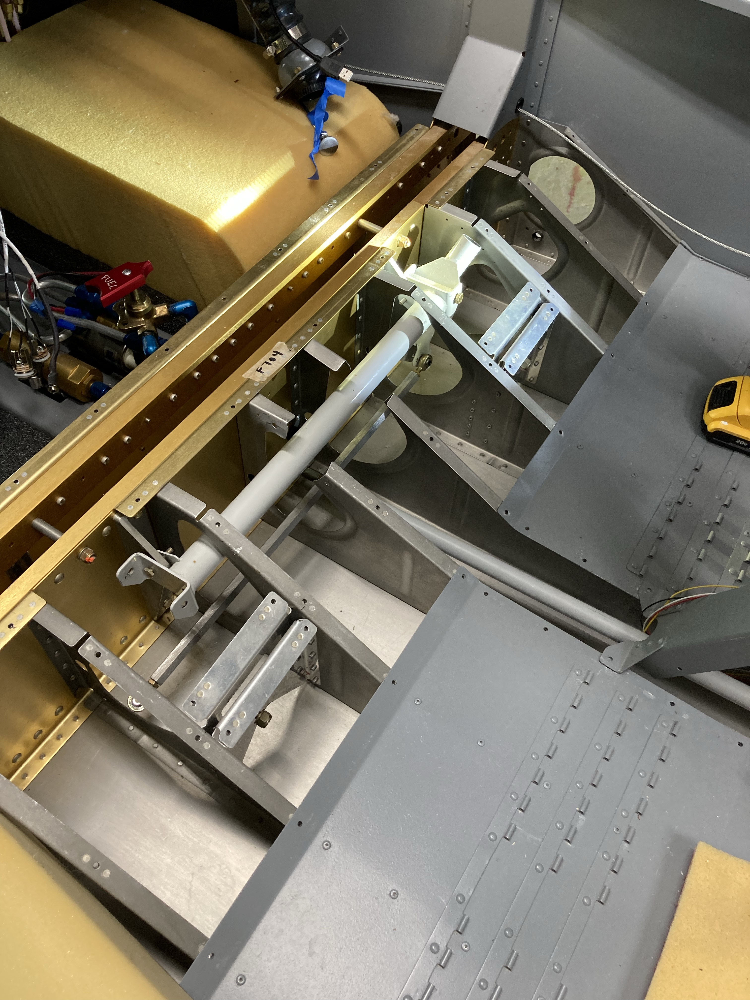
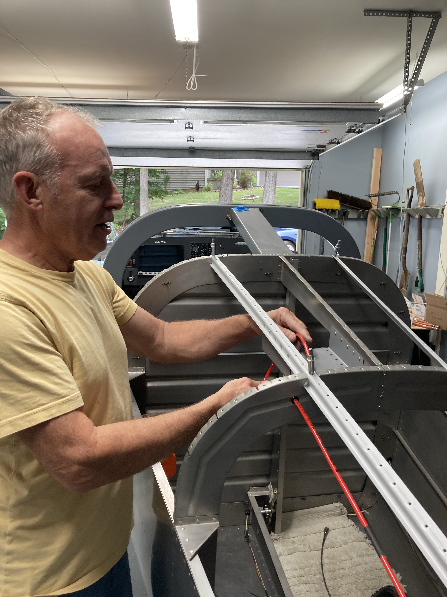
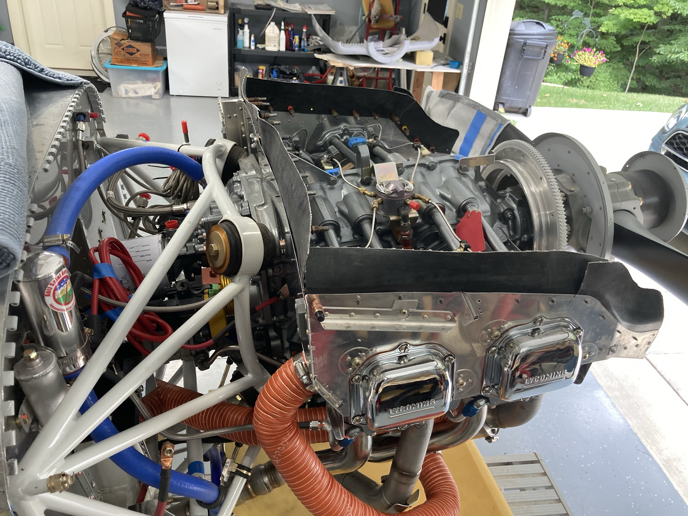
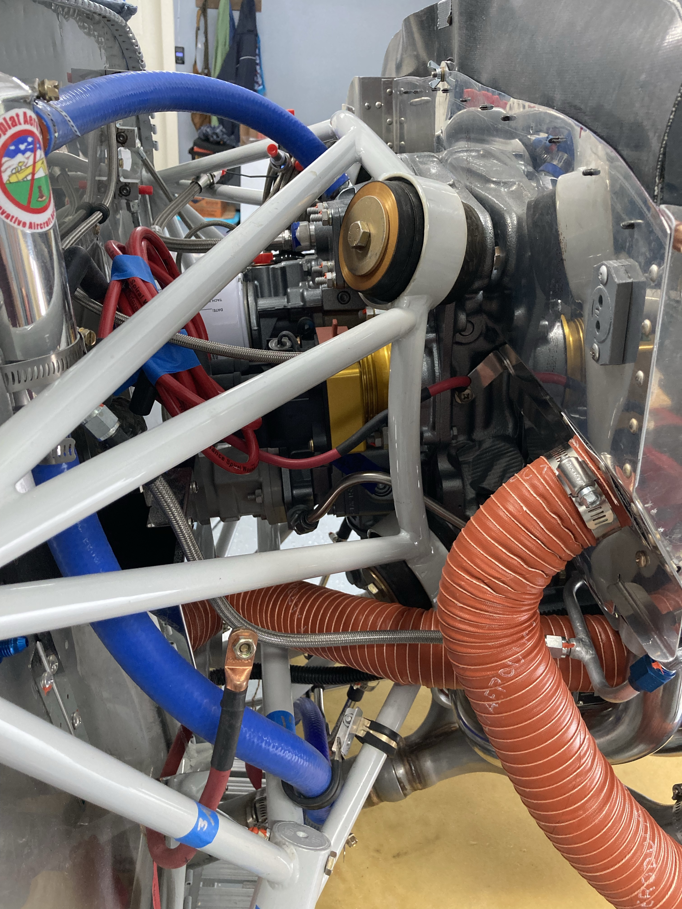

I have finished setting up my workshop with tools and have started to learn how to use them. Along with doing that I am visiting other builders' projects to get an idea of the scale of matters and how it actually looks when the plane is about half done.
Mark, who is an aeronautical engineer by profession, was kind enough to show me his project at his home garage. He is building a Van's RV-7 and is quite near completion. He started off with a quick-built fuselage and wing kit that saved him time and work. I am not sure whether I will go for the quick-built. I will save time but I want the experience and knowledge of building those pieces. But we will see.

Mark opened the cowl to show me the details of the engine installation.







Mark opened the cowl to show me the details of the engine installation.
Mark showed me some places of work that were intricate and where he made some mistakes. These gave me some ideas as I plan ahead — especially with the cowling.
Looking at it all, I could now appreciate the scale of work that is ahead of me.